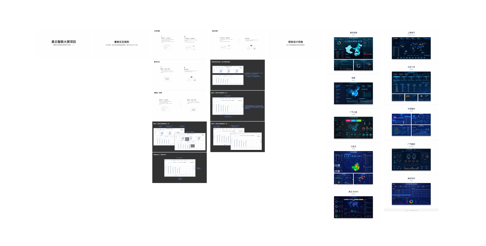

数据云
陀螺仪-夯实数据，基础平台 ｜ 水晶球-梳理数据，经验管理 ｜ 观星台-融合数据，掌控市场 ｜ 地动仪-挖掘数据，全面洞察
网页端
常用分辨率为 1920*1080 以及 1280*720，数据云网页端的视觉规范包括基础规范、导航规范、筛选区域规范、图表区域规范以及表格规范等
手机端
常用分辨率为 375*667 以及 360*640，数据云手机端的视觉规范包括基础规范、导航规范、筛选区域规范、数据展示恢复、控件规范等
数据大屏
数据大屏可分为触摸屏与液晶拼接屏，触摸屏常用分辨率为 1024*1366 以及 14400*990，液晶拼接屏常用分辨率为 1920*N 以及 1080*N，数据云数据大屏的视觉规范包括看板交互规则以及视觉设计风格等


